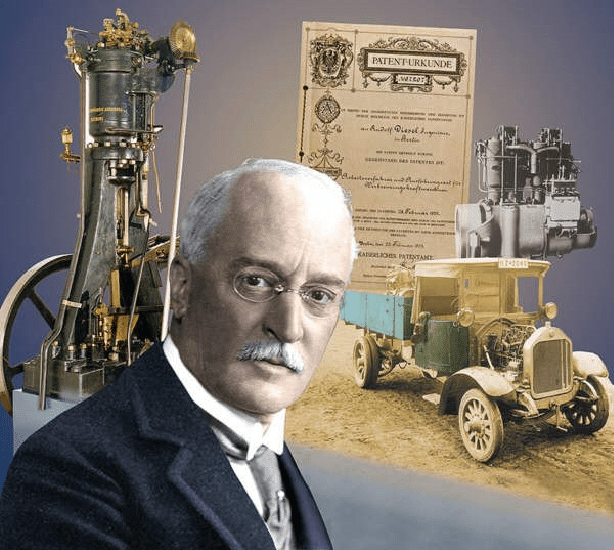
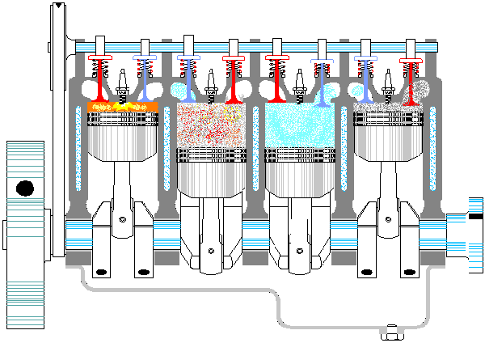

Rudolf Diesel belsőégésű motorjára 1892. február 23-án kapott szabadalmat. Ez a szabadalom a gáztörvényeken alapult levegősűrítéssel működő, tehát gyújtógyertya nélküli (öngyulladásos), belsőégésű motorokat írta le. 1893-ban közzétette elméleti munkáját a hőerőgépekről. A működő prototípust az augsburgi MAN cég készítette el. A motort eredetileg "olajmotornak" nevezték, mivel általában gázolajat használ fel.
Rudolf Diesel különös, sok szenvedéssel teli életpályájának eredményeit, gyümölcseit, a "dízelmotort" ma személygépkocsik, tehergépkocsik, autóbuszok, mozdonyok, hajók, helyhez kötött áramfejlesztők erőteljesebb járású, olcsóbb hajtómotorjaként ismerjük, használjuk és élvezzük. De az általunk ma használt "dízelmotort" és a Diesel által szabadalmaztatott változatot több mint egy évszázadnyi idő és fejlesztői munka választja el egymástól. A megszámlálhatatlan szabadalom, amely Diesel elgondolásában gyökerezik, alakította a motort a mai üzembiztos, gazdaságos formára. Ebből a munkából számos magyar feltaláló is kivette részét, köztük Jendrassik György.
A négyütemű dízelmotor lényegében négy egységből és járulékos segédberendezésekből áll:
A dízelmotor égési folyamata lényegesen eltér a benzinmotorétól. A dízelmotor csak levegőt szív be, amit nagymértékben sűrít Ha ebbe a magas hőmérsékletű levegőbe befecskendezünk gázolajat az magától meggyullad. Innen kapta a nevét, hogy öngyulladós motor. Nem csak az égési folyamat más, hanem az üzemanyag is. Dízelmotornál a gyulladás spontán történik az üzemanyag égéstérbe való befecskendezésének pillanatában.
Filmmúzeumi érdekesség a dízelmotor működéséről
A dízelmotor a benzinessel ellentétben jelentős mennyiségű kormot bocsát ki, amelyet elsősorban az üzemanyag kéntartalma okoz. Erre csak a 2000-es évek elejére találtak megfelelő megoldásokat: ezek közül az egyik a szelektív katalitikus utánkezelés (SCR), a másik a koromszűrő. Az SCR-technológia során a kipufogógázt egy katalizátorba vezetik, ahol egy különleges folyadékot (AdBlue) adnak hozzá. Ezáltal a motor beállításai lehetnek olyanok, hogy ne kormoljon, mert a nagyobb mennyiségben kibocsátott egyéb káros anyagok a katalizátorban átalakulnak. A korommentes égés ugyanis erősen megnöveli a kipufogógáz nitrogén-oxid tartalmát, aminek a szintjét szintén lejjebb kellene szorítani. A koromszűrő lényegesen egyszerűbb: egy hosszú fémhengerből áll, a belsejében vékony, kacskaringós járatokkal, melyekben megmarad a korom.